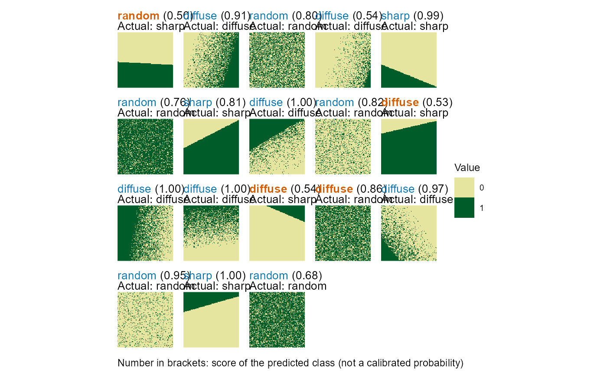
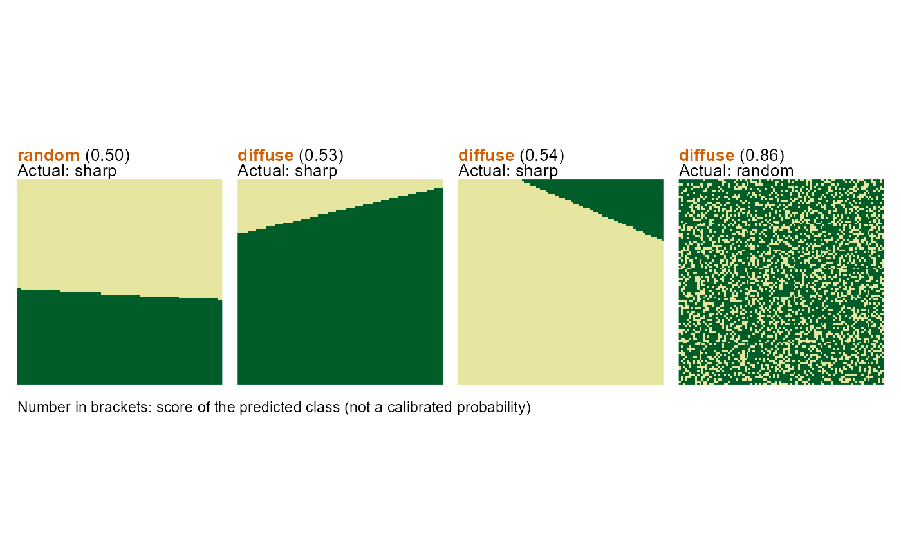

Plot Neural Network Classification Landscapes
Source:R/plot_classification.R
plot_classified_landscapes.RdPlots landscapes with neural network classification results, highlighting correct and misclassified cases. Optionally, only misclassified landscapes can be shown.
Arguments
- classification
A data frame with columns:
landscape_id,actual_class,predicted_class, andconfidence. Can be obtained from the CV-fold results oftrain_nn_metrics/train_nn_pixelsor the output ofapply_nn_metrics/apply_nn_pixels.- landscapes
A list of landscape objects corresponding one-to-one and in the same order as the rows in `classification`. The easiest way to ensure this is to use the same list of landscapes for both training and plotting.
- only_misclassified
Logical; if
TRUE, only misclassified landscapes are plotted. Default isFALSE.- ...
Additional arguments passed to
plot_landscape_list, such asshow_legend,legend_title,ncol,max_landscapes,force, orsubset_index.
See also
train_nn_pixels, train_nn_metrics
Other visualization:
plot_landscape(),
plot_landscape_list(),
plot_metrics()
Examples
# \donttest{
# Generate training landscapes
landscapes <- create_landscapes(n = 30, patterns = c("random", "sharp", "diffuse"))
#> ✔ Successfully generated all 30 training landscapes
# Calculate landscape metrics
metrics <- calculate_landscape_metrics(landscapes, level = "landscape")
#> ■■■■■■■■ 23% | ETA: 9s
#> ■■■■■■■■■■■■■ 41% | ETA: 8s
#> ■■■■■■■■■■■■■■■■■ 53% | ETA: 8s
#> ■■■■■■■■■■■■■■■■■■■■■■■■■ 80% | ETA: 3s
# Find the best 10 metrics for classification
best_10 <- evaluate_landscape_metrics(metrics, metrics_number = 10)
#> Warning: Excluded 180 rows containing 6 metrics with NA values. Metrics removed:
#> "enn_cv", "enn_mn", "enn_sd", "iji", "pafrac", and "rpr" Use
#> `exclude_NA_metrics = FALSE` to retain (not recommended for model training)
#> Warning: Excluded 3 metrics with zero variance: "pr", "prd", and "ta"
#> ! Only 6 uncorrelated metrics found. Filling to 10 with correlated metrics.
# Train model with cross-validation
model <- train_nn_metrics(metrics, metrics_selected = best_10, cv_method = "k-fold")
#> ℹ Low sample-to-predictor ratio (3:1). Consider LOO CV or reducing features.
#> ℹ Reducing CV folds from 5 to 3 to maintain 3 samples per class per fold.
#>
#> ── Cross-validation results ──
#>
#> ℹ Method: 3-fold cross-validation
#> ℹ Overall accuracy: 93.33%
#>
#> ── Confusion matrix
#> Actual
#> Predicted diffuse random sharp
#> diffuse 9 1 0
#> random 1 9 0
#> sharp 0 0 10
#>
#> ── Per-class performance
#> # A tibble: 3 × 5
#> class count recall precision f1_score
#> <chr> <int> <dbl> <dbl> <dbl>
#> 1 diffuse 10 0.9 0.9 0.9
#> 2 random 10 0.9 0.9 0.9
#> 3 sharp 10 1 1 1
# Plot all classification results
plot_classified_landscapes(
model$performance$validation_results,
landscapes
)

# Show only misclassifications without legend
plot_classified_landscapes(
model$performance$validation_results,
landscapes,
only_misclassified = TRUE,
show_legend = FALSE,
ncol = 4
)

# }